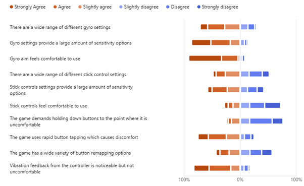
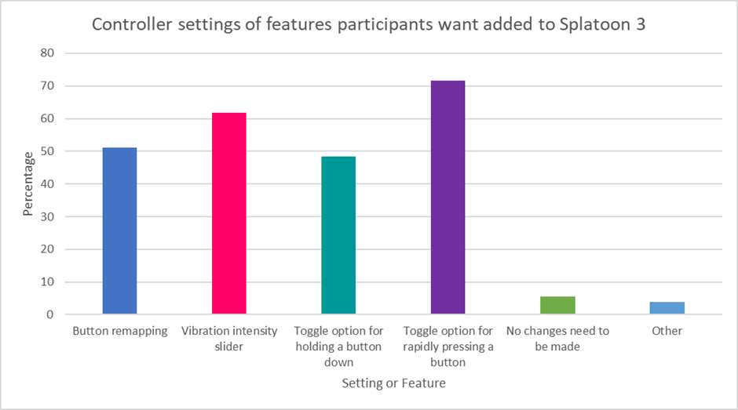
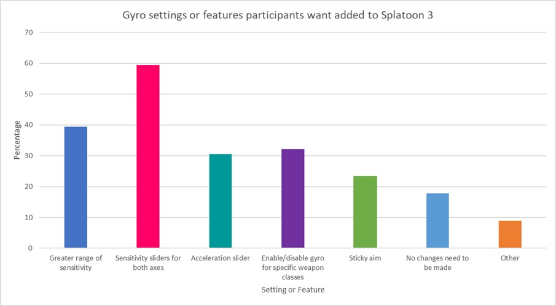
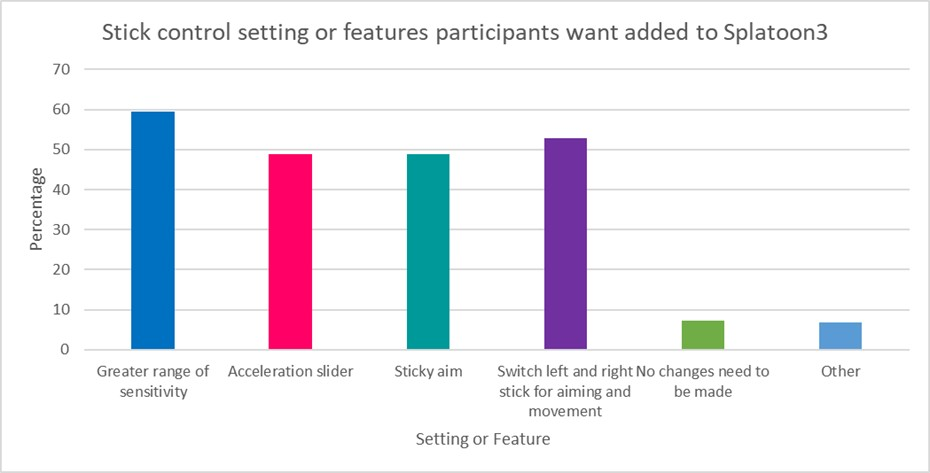

Controller Likert

This question and the other questions in this section asked a series
of statements relating to a specific aspect of accessibility design
and how much participants agreed or disagreed with those statements.
When looking at how people responded to that question it shows that
there was mostly a strong agreement/disagreement with only a couple
of statements which received a mixed response.
Some of the strongest responses were to the statements asking about
gyro controls where about 75% or more people agreed with the
statements. In particular, 58.6% of participants strongly agreed
that gyro controls felt comfortable to use and 34.5% strongly
agreeing that gyro controls had a large and varied range of
sensitivity settings. Participants also agreed that vibration
feedback from the controller was comfortable although, less people
strongly agreed compared to the previous statements. Finally, most
people agreed that when the game requires you to rapidly press a
button on the controller, it was uncomfortable.
There were two statements that respondents mostly disagreed with.
These included stick controls being comfortable and holding down
buttons for inputs being uncomfortable, 72.1% and 76.2% respectively
disagreed with the statements.
Some statements received mixed responses, these included stick
controls having a variety of settings to customise, stick controls
having a large range of sensitivity options and button mapping
having a variety of remapping options. These statements saw an
agree/disagree split of 48.3%/51.7%, 58%/42% and 43.1%/56.9%
respectively. For these statements there was a much more even
proportion of agreement and disagreement.
Overall, this shows people are generally happy with the current
implementation of gyro controls and their settings as well as the
vibration feedback from the controller. Opinions about stick
controls were a lot more mixed with the comfortability of stick
controls being a main issue for people. Lastly, button mapping and
rapid button pressing were also seen as problems.
Controller Improvements

How did players want the controls to be improved?
Gyro Improvements

Questions 9 - 13 allow multiple answers to be selected so the
percentages are shown in the graph below. This question asks
participants to select accessibility options they would like to be
added into Splatoon 3.
The most popular option was the inclusion of gyroscopic sensitivity
sliders for both the x and the y axis with almost 60% of people
surveyed selecting that option. The 2nd most popular option was to
include a greater range of sensitivity for the gyro aim with 39.4%.
the rest of the options range from about 25% - 30% which shows that
the less popular options still have a decent amount of people
supporting their inclusion in Splatoon 3.
Out of the 174 respondents, 17.8% said there was “No changes need to
be made” which is a lot less than expected when comparing it to
player satisfaction of gyro controls in question 6.
Finally, the “Other” option allowed for participants to write other
accessibility options outside of the options already provided (see
appendix A, A7). So, just under 9% of people suggested other
options. Out of these suggestions there were a couple of repeated
suggestions these were to allow vertical camera movement with the
right stick when using gyro and a flick stick option for the right
stick (the camera turns a set amount in the direction it is flicked,
90 degrees left or right and 180 degrees when flicked down).
Sticks Improvements

When asked about improvements that could be made for stick controls
it is notable that all suggested options (options 1-4) are around
the 50% - 60% range meaning that stick controls require a fair
amount of improvement. This is also supported by 7.2% of
participants selecting “No changes need to be made”.
The “Other” option account for 6.7% of users. The majority of
answers talked about players not using stick settings or including
more options while having gyro options enabled. I will talk about possible
changes/improvements to the questionnaire to address these comments
in a later section.